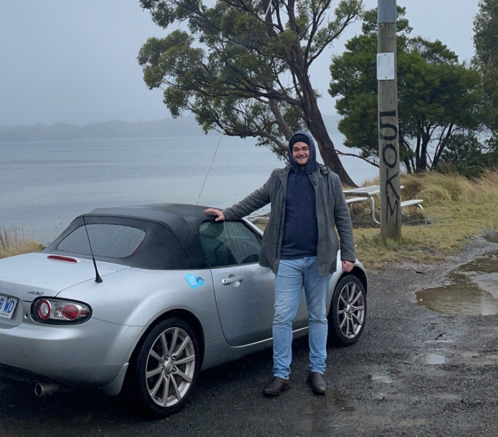
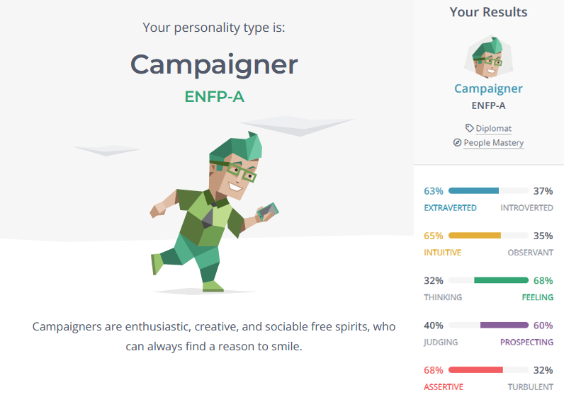
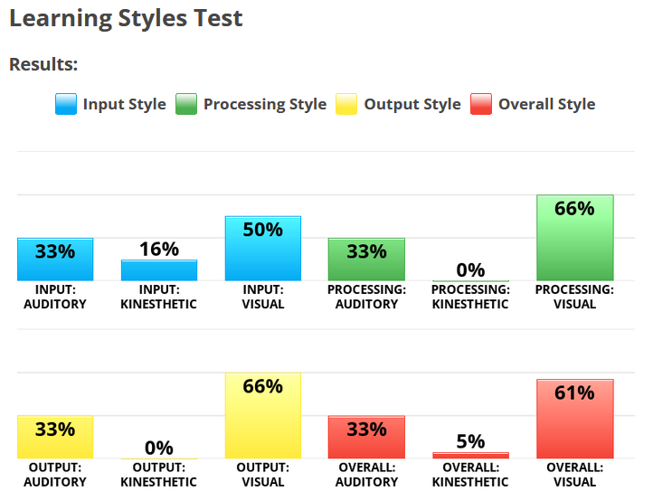
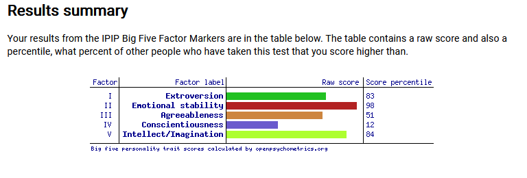
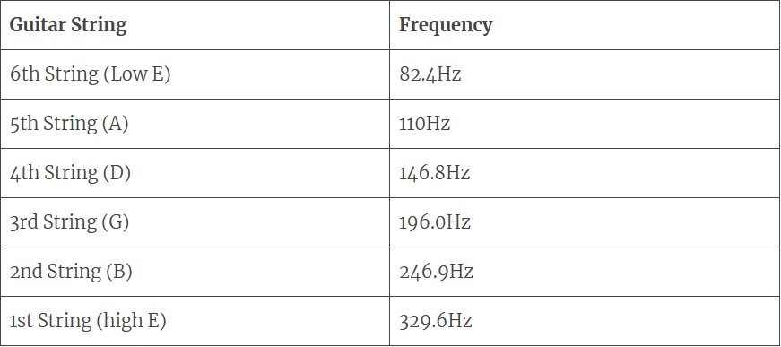

My IT Profile
Personal Information
Hi there!

Jake Harman - s3477973
My name is Jake and I’m a lifelong Melbournian. In the past I’ve started and stopped higher education, having begun both a Bachelor of Biomedical Science at La Trobe and a Bachelor of Design with RMIT. Both of these were many years ago, and I made the decision to enter the workforce instead of studying something that just wasn’t for me. As such my education doesn’t go too far past year 12 (although I do have my forklift licence if needed)
While I am partial to sunsets and long walks on the beach, my favourite pastimes are playing guitar and playing video games, time permitting. My picture is from a recent trip to Tasmania, where in my infinite wisdom I decided to rent the smallest possible soft-top convertible to go to Port Arthur on the most miserable and wet day that week. I would definitely recommend going if you haven’t already been, and make sure to visit Mona if you do, it is amazing.
Interest in IT
As a recovering luddite I’m trying to learn more about the workings of IT for personal knowledge, as well as increasing employability in the future. My initial interest in IT started over ten years ago when I built my first gaming PC that got me through hundreds of hours of Tribes: Ascend, Mount and Blade, Skyrim and Left 4 Dead. The push to learn how to build one was purely financial; as a poor student with minimal income and a budding gaming addiction, pre-built PCs were out of the question.
Since then I’ve worked for various private and government enterprises using software systems that have ranged from barely-adequate to functional in name only. My goal is to be able to work on the functionality of online systems both for the users and for the people processing information, potentially with a focus on UI and UX. What I focus on is subject to change though, as I learn and grow throughout my studies.
My choice of RMIT was based on the availability of courses through Online Universities Australia. As I work full-time I needed an online course structure that took place after hours and RMIT’s Bachelor of IT suited perfectly.
With this degree I hope to gain a wide understanding of the components that come together to produce the software we use all the time in our daily lives. Personally, a great deal of my IT knowledge is still “the magic box gives the internet and does my taxes for me”, and I’m ready to look behind the curtain and start exploring how this technology actually works.
Ideal Job
The job I chose is UX Lead with Just Digital on seek.
The position is a leadership role within a UX design team, liaising with clients and stakeholders to understand business needs and objectives to deliver the best digital experience for their needs. This role also has research components, with development and design work.The appeal of the role is mainly focused on finding solutions for clients; applying appropriate research and being able to take on something new dependent on needs.
The application lists tertiary qualification as desirable, meaning that a greater focus will be on a portfolio and proven history of achievement with at least 5 years of products to show for it. Specific skills are required with the UX tools Figma, Optimal Workshop, and the applications within the Adobe Creative Cloud, alongside other supplementary tools Miro, Slickplan and Google Docs. Further, provable skills are required in managing and mentoring a team.
I currently have experience managing/mentoring teams in a non-design context, and have some limited experience with the Adobe Suite. Bridging the gap to where I would be able to comfortably apply for this job would require years of experience; some possible while working towards my degree but for the most part would be taking on personal projects and building a portfolio.
Personal Profile
Myers-Briggs
For the Myers-Briggs test I ended with a result of Campaigner (ENFP-A)

Learning Styles
The learning styles test I used was from IDRlabs.com with a result showing a high tendency towards visual learning, output and processing, with auditory secondary and kinesthetic barely factoring in.

Big 5 Factors
I tested against Big 5 Factors for the online test of my choosing, giving a result of high Emotional stability and Intellect/Imagination, with low conscientiousness.

What do the results of these tests mean for you?
The Myers-Briggs result fits well enough as far as the weaknesses listed.
- People pleasing
- Unfocused
- Disorganised
All the above are very apt and things I do tend to struggle with in daily life. Being disorganised and unfocused go hand-in-hand, as picking up something new is —always— so exciting but means that other more pressing tasks fall behind. That said the positives do also apply and provide at least some context. Curiosity is a key component to losing focus and doing a dive into a completely different idea can provide greater understanding and context, but does mean that something falls behind.
The learning styles test showing a tendency towards visual learning is quite appropriate. I tend to find myself at the very minimum writing things down or drawing diagrams/mind maps to plan and make sense of tasks. Graphing data in programs like excel also helps tremendously with memory; where being told numbers will usually stick for me, a graph will always persist longer and more accurately. Lastly, I definitely don’t find myself creating emotional attachments to concepts when recalling them from memory, so the minimal kinesthetic learning style seems correct.
The Big Five test ties in with the negative attributes of the Myers-Briggs result. As per the trait description of Factor IV (Conscientiousness):
“In contrast, individuals who score low on conscientiousness tend to be more impulsive and disorganized. They may have difficulty setting and achieving goals, and may be more likely to engage in behaviors that are not in their best interest.“
Incredibly similar to the campaigner's weakness, and I am definitely one to procrastinate and make things harder for myself. The other relevant factors (II and V) describe Emotional stability and Openness to Experience respectively. Factor V once again shows a trend towards curiosity and exploration of new ideas.
How do you think these results may influence your behaviour in a team?
The results may indicate I’d be more likely to want to do the work of others, not necessarily because I want to do all the work alone, but because I would want to see all the pieces before it comes together. I can very easily see myself spread too thin when assisting others, and consequently neglecting the tasks that have been set for me.
How should you take this into account when forming a team?
Clear and short timelines for tasks need to be set. Too much time to make progress will result in procrastination, or worse - starting another unrelated activity!
Project Idea
Overview
My project idea is an app that works in 2 ways - one as a tuner for guitar with options for other tuning setups and not only your standard EADGBE tuning, and also a platform for sharing the tuning setups for songs. This will include direct links to external materials such as the likes of guitar tablature websites Ultimate Guitar, Songsterr, and A-Z Guitar Tabs, and also direct links to videos specifically in that tuning, whether they be tutorials or covers, where the finger positions can easily as to easily support the learning of the relevant song.
Motivation
My motivation for this project comes from learning to play guitar myself. There is a distinct lack of uniformity in material available online, where tablature is rife with errors or even in the complete wrong key, and the majority of video tutorials available on youtube and the like will have varying interpretations of the songs. The song that sticks out in memory for me and more or less the catalyst for the idea is the song “Better Be Quiet Now” by Elliot Smith ; when learning this song some years ago I was completely unable to find any tutorials with the correct tuning. Almost all of the interpretations were in drop-D tuning with a capo on the second fret (see an example here) - completely different to how the song is actually played. Not to say that the other interpretations are bad, but they are misleading and the vast majority of these 10+ year old videos are only sitting at 30k views, where most of the comments are (rightfully) praising the skill of the musician and not correcting their tuning.
Description
Guitar Tuner
The Guitar Tuner portion of the service will take external audio from the phone microphone and test against a reference frequency. With regards to this quora post, “your measured frequency will be more stable if you oversample, so let's just say we sample at 20,000 Hz (20 kHz)” we would have to find the highest frequency a string could reasonably be tuned to, which would (roughly) be the highest tension the high E string could be wound before breaking.
The range of frequency would need to similarly be measured down to the lowest frequency for the lowest string. Once these two frequencies are determined, a program would need to be written to reference the input sound and compare against known frequencies of notes.

This article from The Acoustic Guitarist also sheds further light on how a tuner will reference audio. From this table, we can see a standard high E string tuned simply to high E has a frequency of 329.6Hz, far below the 20 kHz in the quora post. As such, the number of references would be much more reasonable if we only reference one octave above and below the standard tuning.
For this app we would need to have the tuner reference the input note against the true relative note, or in other words it needs to work chromatically, unlike other tuning apps that reference against the nearest known standard tuning.
The intention with the guitar tuner is to allow users to set which standard notes they wish to tune to across all strings. For example, when presented with the tuner showing EADGBE, selecting one of the notes will show a menu, perhaps a dropdown or scale menu allowing customisation. Once all the tunings are selected, the user can proceed to begin tuning string by string.
This ties in with the second part of the app, which is community driven.
Community Features from custom tuning screen
Search songs in this tuning:
This function will allow the user to find songs using the same tuning. A mandatory part of this will be fine-tuning the search based on artist, genre, style etc., as more common tunings could potentially have hundreds of thousands of hits.
Add song in this tuning:
This functionality will allow users to add an item including links out to official music videos, unofficial tutorial videos and links to tabs or chord sheets.
Community features from home screen
Search a song:
Accessed from the landing page, this will allow the user to search a song to see if there’s a record of the appropriate tuning. As this record would have been added with the above “Add song in this tuning”, the entry will contain links to the supporting information, allowing the user to then tune their guitar to the right pitch and jump straight into learning the song.
All of these screens and submissions will have the opportunity to include whether or not a capo is used for the relevant song, and what fret the capo should be placed on.
Tools and Technologies
For the creation of the visual elements software such as the Adobe Suite would need to be used. Photoshop and Illustrator could be very well-utilised in the production of icons and interactables.
For the overall combination of elements software like Figma for prototype design between collaborators. Figma or a similar software would be essential to mock-up UI elements.
An app like this would need to be written in a programming language like Java or Python, requiring the relevant text editors and compilers.
Skills Required
Skills in programming relating to captured audio would be essential for creating the guitar tuner portion of the app. This would be the biggest hurdle for someone like myself with limited experience in programming. A knowledge of phone permission requests and general app creation is also required. To get a working prototype of the app would likely take months or years of programming experience that I don’t have.
The UI elements could potentially only need a basic level of skill in Illustrator. There isn’t a real need for anything complex or detailed as far as images, so basic vectors would be appropriate.
Finally the submission of content and community links to external content would require more programming knowledge.
Outcome
If successful, I believe this project would be an easy way to share learning in a way that doesn’t necessarily require a lot of effort. Every guitarist I know uses some variety of tuner, and many spend hours looking for tutorials and assistance.
A program that combines something reasonably essential like a guitar tuner, with a way to search for collaboratively sourced tutorials that have been vetted by users would be a great way to connect budding musicians with actually helpful assistance. It would also allow some of the older and more niche content creators to be able to be noticed for their talent, and not just passed over by existing algorithms in favour of “pretty but wrong” creators.